Pomorskie
Najważniejsze miasta
Gdańsk
Gdańsk (kaszub. Gduńsk[7]; niem. Danzig; łac. Gedanum, Dantiscum[8]; niderl. Danswijk[9]) – miasto na prawach powiatu w północnej Polsce w województwie pomorskim, położone nad Morzem Bałtyckim u ujścia Motławy do Wisły nad Zatoką Gdańską, największe pod względem powierzchni miasto w kraju. 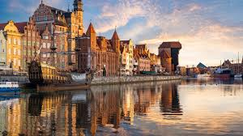Bazylika mariacka
Jest największym ceglanym kościołem na świecie, którego budowa trwała prawie 160 lat. Wnętrze zachwyca gotycką architekturą i słynnym zegarem astronomicznym. Można także wejść na wieżę bazyliki i podziwiać panoramę Gdańska.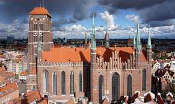
Targ i Neptun
To najbardziej reprezentacyjna ulica Gdańska, otoczona kolorowymi kamienicami i zabytkowymi budynkami. Fontanna Neptuna to jeden z symboli miasta, nawiązujący do jego morskiego charakteru. Miejsce tętni życiem zarówno w dzień, jak i wieczorem, a wokół znajdują się liczne restauracje i kawiarnie.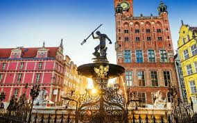
Muzem II WŚ
To jedno z najnowocześniejszych muzeów w Polsce, które przedstawia wydarzenia wojenne z perspektywy różnych narodów. Ekspozycja zawiera autentyczne eksponaty, multimedialne prezentacje i realistyczne rekonstrukcje. Wizyta tutaj to przejmujące doświadczenie, które pozwala lepiej zrozumieć skalę konfliktu.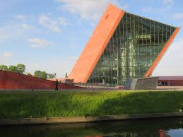
Sopot
Sopot (kaszub. Sopòt lub też Sopòtë, Copòtë, Copòt; niem. Zoppot)[2] – miasto na prawach powiatu w północnej Polsce nad Zatoką Gdańską (Morze Bałtyckie), położone na Pobrzeżu Gdańskim, między Gdańskiem a Gdynią, z którymi tworzy Trójmiasto, w obrębie aglomeracji trójmiejskiej. 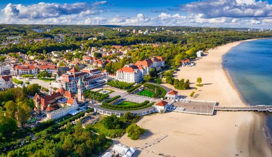Monte Cassino ("Monciak")
Jest to główny deptak Sopotu, pełen eleganckich kawiarni, restauracji i klubów. To miejsce tętni życiem przez cały rok i przyciąga zarówno turystów, jak i mieszkańców. Wzdłuż ulicy można zobaczyć m.in. Krzywy Domek, który swoim bajkowym wyglądem przyciąga uwagę każdego przechodnia.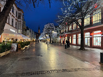
Molo
To najdłuższe drewniane molo w Europie, sięgające aż 511 metrów w głąb morza. Spacer po nim pozwala poczuć morski klimat i podziwiać piękne widoki na Zatokę Gdańską. Latem odbywają się tu liczne wydarzenia kulturalne, a zimą można poczuć wyjątkową, spokojną atmosferę.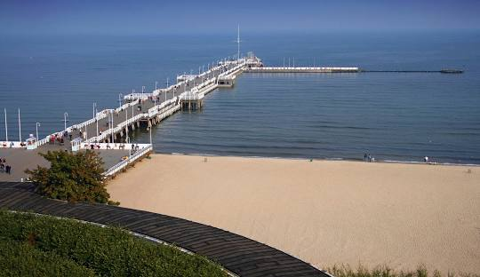
Opera leśna
To niezwykły amfiteatr położony w lesie, znany z doskonałej akustyki i prestiżowych wydarzeń muzycznych. Odbywa się tu m.in. słynny Sopot Festival, przyciągający artystów z całego świata. Otaczające drzewa sprawiają, że koncerty w tym miejscu mają niepowtarzalny klimat.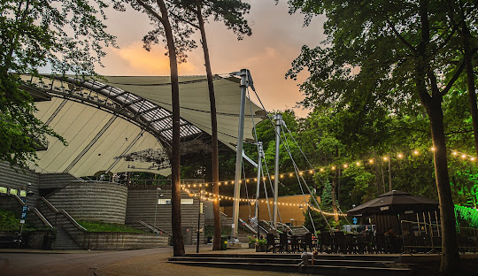
Hel
Hel (kaszub. Hél, niem. Hela)[2] – miasto w województwie pomorskim, w powiecie puckim, położone na cyplu Mierzei Helskiej nad Morzem Bałtyckim. W latach 1975–1998 miejscowość znajdowała się w województwie gdańskim. 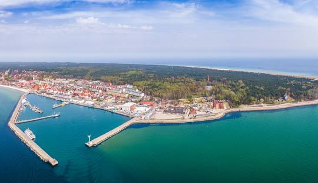Fokarium
To ośrodek naukowy zajmujący się ochroną fok szarych, które można tu zobaczyć z bliska. Zwiedzający mogą obserwować karmienie fok oraz dowiedzieć się więcej o ich biologii i ochronie. To jedno z najbardziej popularnych miejsc na Helu, zwłaszcza dla rodzin z dziećmi.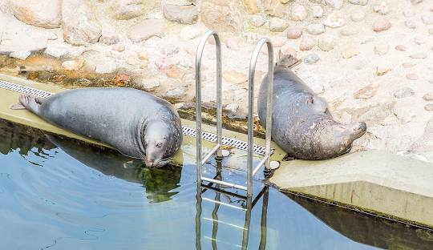
Cypel
Jest to najbardziej wysunięty na północny wschód punkt Półwyspu Helskiego, gdzie Bałtyk spotyka się z Zatoką Pucką. Można tu spacerować wśród wydm i podziwiać malownicze krajobrazy. To także doskonałe miejsce do obserwacji ptaków oraz relaksu z dala od miejskiego zgiełku.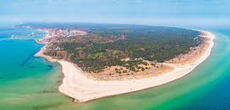
Muzeum Obrony Wybrzeża
Znajduje się w dawnych niemieckich bunkrach i przedstawia historię wojskowości na Półwyspie Helskim. Można tu zobaczyć oryginalne działa, mundury i dokumenty związane z obroną Helu podczas II wojny światowej. Zwiedzanie muzeum pozwala lepiej zrozumieć strategiczne znaczenie tego miejsca na mapie Polski.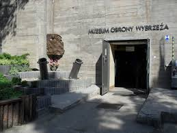